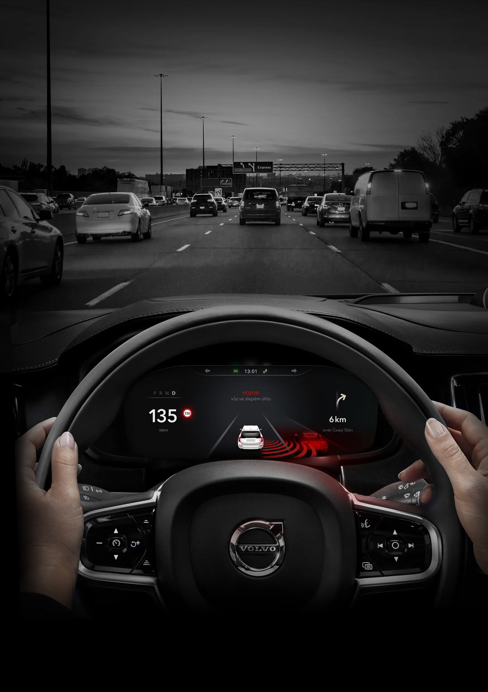
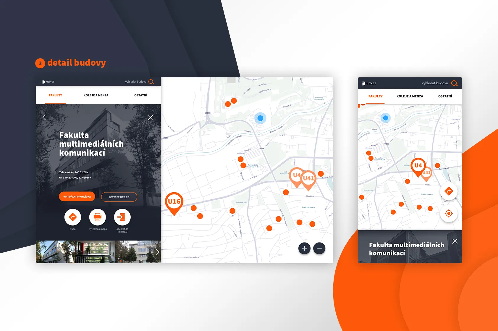

UI/UX
Cabin Hunt app
projekt návrhu rezervační aplikace
Hudební přehrávač
Prototyp mobilní aplikace
In-vehicle infotainment system
Diplomová práce na téma Uživatelské rozhraní v automobilech zaměřené na jízdní asistenty

Interaktivní mapa UTB
https://mapa.utb.cz/

Aplikace Studuj UTB
Mobilní aplikace pro zájemce o studium